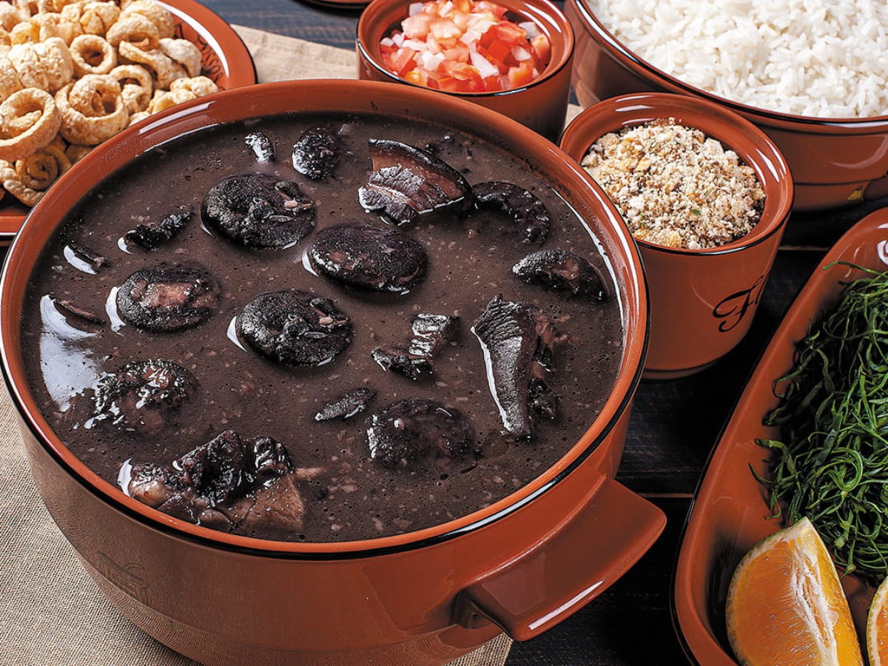

Back to Kitchen
Feijoada

Hearty Brazilian casserole with deeply savoury spiced pulses
Ingredients
250g dried black bean, soaked overnight, then drained
100g streaky smoked bacon, cut into slices
3 chorizo cooking sausages
500g pork shoulder, cut into 5cm cubes
4 garlic cloves, finely chopped
2 tbsp white wine vinegar
Steps
Heat a large heavy-based saucepan with a fitted lid, add the bacon and fry until crisp. Remove and keep the oil in the pan. In batches sear the ribs, sausages and pork shoulder. Season each batch with salt and pepper.
Remove the meat and set aside. Add the onion, garlic and chilli to the pan. Pour in a little olive oil if it needs more. Season with salt and pepper and fry for 8 mins or until soft.
Add the meat, bay leaves, white wine vinegar and drained beans. Cover with just enough water to cover, about 650ml. Bring to a boil and reduce the heat to a low simmer. Cover and cook for 2 hrs, or until the beans are soft and the meat is tender. If there is too much liquid in the pot take the lid off in the last hr. You can also use a slow cooker on the short method (4 hr) or make a quick version using a pressure cooker in batches for 30 mins each. Another method is to cook it in the oven for 3-4 hrs at 160C/140C fan/gas 3.
Serve with rice, a sprinkle of parsley or coriander, hot pepper sauce and orange slices.
Back to Kitchen